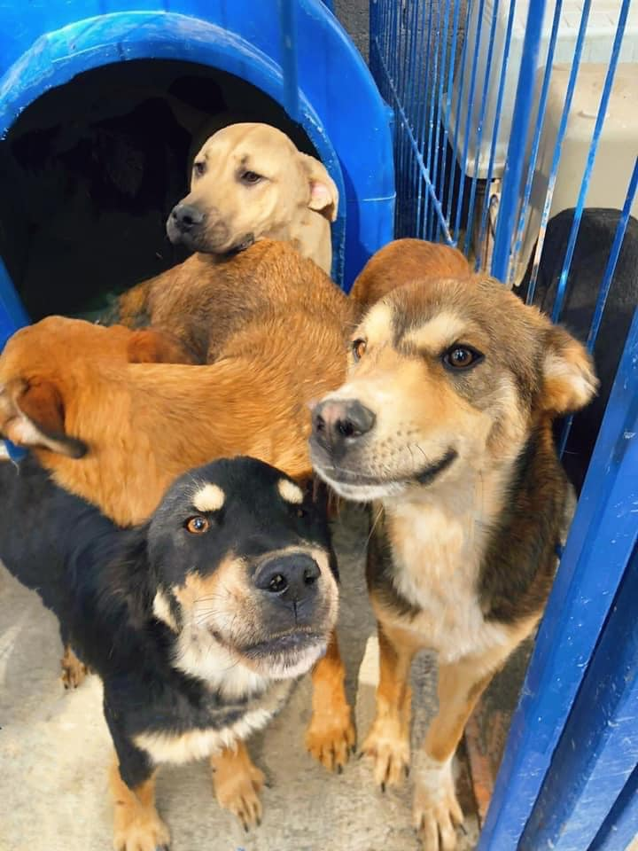
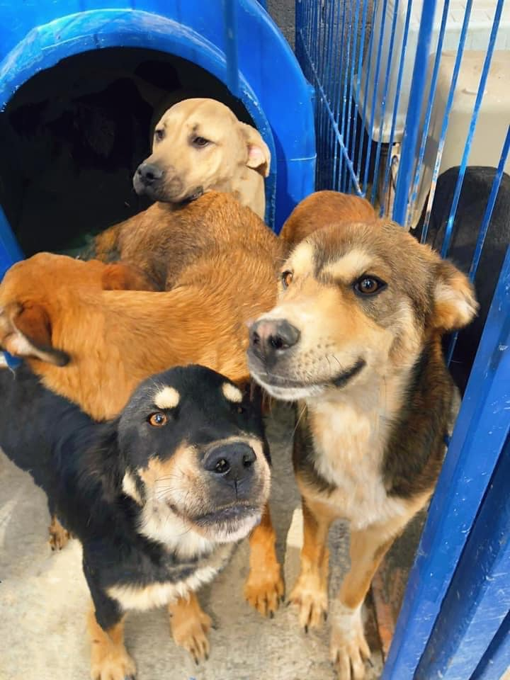

Servicios
Cuando te planteas acoger un perro, lo primero que debes considerar seriamente es si dispones del tiempo y la predisposición para hacerlo. Incorporar un perro en tu rutina, sobre todo si es un cachorro, implica un nivel de dedicación y esfuerzo importante,Cuidar de tu mascota y mantenerla en unas condiciones óptimas de espacio, tiempo, alimentación, ejercicio, etc.

Conecta con tu lomito🐕
Logra un paseo ideal🐕
 
